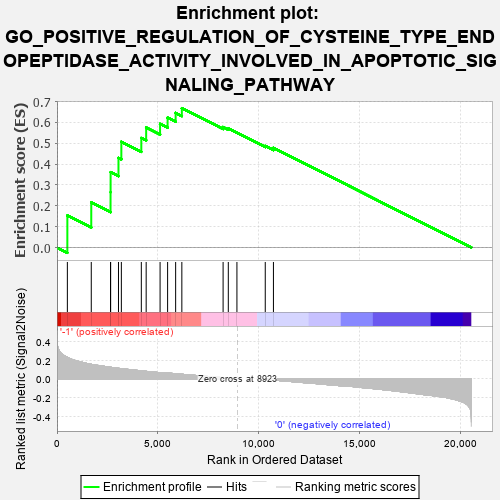
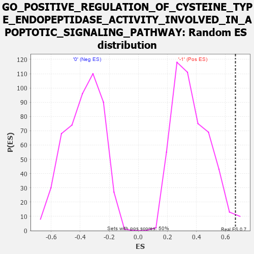

| | | Dataset | GSEAExpression.phenotype_uvm.cls#-1_versus_0 |
| Phenotype | phenotype_uvm.cls#-1_versus_0 |
| Upregulated in class | -1 |
| GeneSet | GO_POSITIVE_REGULATION_OF_CYSTEINE_TYPE_ENDOPEPTIDASE_ACTIVITY_INVOLVED_IN_APOPTOTIC_SIGNALING_PATHWAY |
| Enrichment Score (ES) | 0.66804594 |
| Normalized Enrichment Score (NES) | 1.8141512 |
| Nominal p-value | 0.016129032 |
| FDR q-value | 0.40910444 |
| FWER p-Value | 0.789 |
Table: GSEA Results Summary

Fig 1: Enrichment plot: GO_POSITIVE_REGULATION_OF_CYSTEINE_TYPE_ENDOPEPTIDASE_ACTIVITY_INVOLVED_IN_APOPTOTIC_SIGNALING_PATHWAY
Profile of the Running ES Score & Positions of GeneSet Members on the Rank Ordered List
| PROBE | DESCRIPTION
(from dataset) | GENE SYMBOL | GENE_TITLE | RANK IN GENE LIST | RANK METRIC SCORE | RUNNING ES | CORE ENRICHMENT | | 1 | FADD | na | | | 513 | 0.229 | 0.1535 | Yes |
| 2 | CASP8 | na | | | 1697 | 0.155 | 0.2163 | Yes |
| 3 | LGALS9 | na | | | 2652 | 0.123 | 0.2656 | Yes |
| 4 | TRAF2 | na | | | 2655 | 0.123 | 0.3613 | Yes |
| 5 | GSN | na | | | 3045 | 0.112 | 0.4296 | Yes |
| 6 | RIPK1 | na | | | 3187 | 0.108 | 0.5071 | Yes |
| 7 | FASLG | na | | | 4176 | 0.085 | 0.5251 | Yes |
| 8 | JAK2 | na | | | 4416 | 0.080 | 0.5754 | Yes |
| 9 | BAX | na | | | 5105 | 0.065 | 0.5929 | Yes |
| 10 | TNFSF10 | na | | | 5478 | 0.062 | 0.6226 | Yes |
| 11 | TNFRSF10A | na | | | 5876 | 0.054 | 0.6455 | Yes |
| 12 | FAS | na | | | 6183 | 0.048 | 0.6680 | Yes |
| 13 | TRADD | na | | | 8226 | 0.012 | 0.5777 | No |
| 14 | TNFRSF10B | na | | | 8484 | 0.007 | 0.5709 | No |
| 15 | HTRA2 | na | | | 8911 | 0.000 | 0.5503 | No |
| 16 | SMAD3 | na | | | 10314 | -0.007 | 0.4870 | No |
| 17 | TFAP4 | na | | | 10719 | -0.014 | 0.4780 | No |
Table: GSEA details [plain text format]
Fig 2: GO_POSITIVE_REGULATION_OF_CYSTEINE_TYPE_ENDOPEPTIDASE_ACTIVITY_INVOLVED_IN_APOPTOTIC_SIGNALING_PATHWAY
Blue-Pink O' Gram in the Space of the Analyzed GeneSet

Fig 3: GO_POSITIVE_REGULATION_OF_CYSTEINE_TYPE_ENDOPEPTIDASE_ACTIVITY_INVOLVED_IN_APOPTOTIC_SIGNALING_PATHWAY: Random ES distribution
Gene set null distribution of ES for GO_POSITIVE_REGULATION_OF_CYSTEINE_TYPE_ENDOPEPTIDASE_ACTIVITY_INVOLVED_IN_APOPTOTIC_SIGNALING_PATHWAY